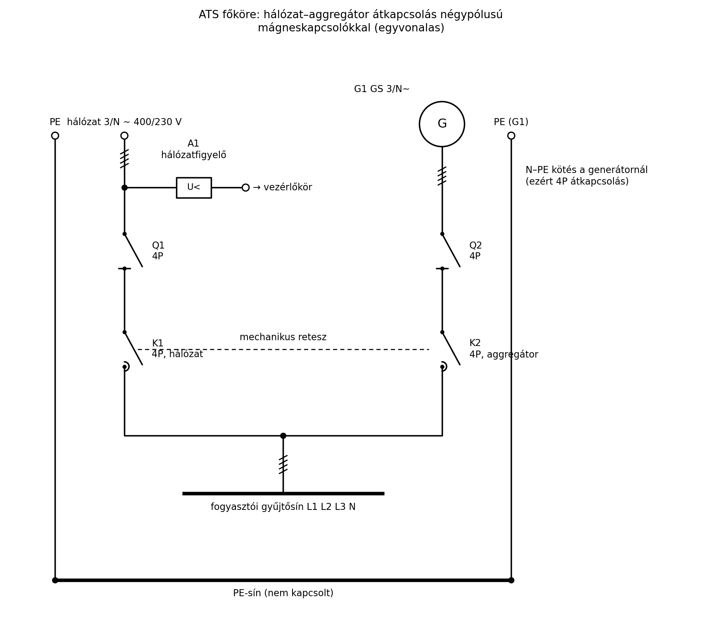
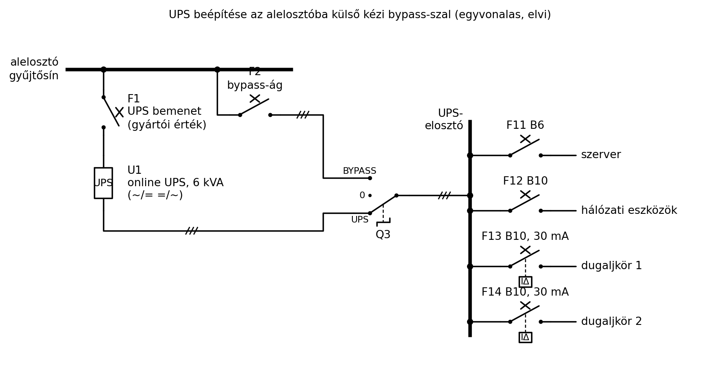

Egy kisebb ipari üzem irodájában a szerelő azt a feladatot kapja, hogy a szerver és az adatmentő rendszer mellé szünetmentes tápegységet (UPS) telepítsen, mert a környéken gyakoriak a rövid, néhány másodperces hálózati feszültségkimaradások. A karbantartó műhelyben emellett egy dízelaggregátort is üzemeltetnek, amely áramszünet esetén át kell, hogy vegye a fontos fogyasztók ellátását. A szerelőnek nem elég csak bekötnie a készülékeket: tudnia kell, milyen UPS típus illik az adott fogyasztóhoz, mekkora akkumulátor szükséges a kívánt üzemidőhöz, és hogyan kell reteszelni az aggregátor átkapcsolóját, hogy soha ne kerülhessen össze a hálózattal. Ez az alfejezet ezt a három területet tanítja meg: a szünetmentes áramforrásokat, az akkumulátorok méretezését és az aggregátoros betáplálás átkapcsolását.
Egy kis irodai UPS dobozán a következő adatok szerepelnek: bemenet 230 V, 50 Hz; kimenet 230 V, 650 VA / 390 W; akkumulátor 12 V, 9 Ah, ólom-savas. A hálózati feszültség kiesésekor a készülék egy rövid kattanással átkapcsol belső akkumulátoros üzemre, és a számítógép tovább működik. Ha viszont a szerelő rosszul választ UPS-t, az átkapcsolás alatt a számítógép újraindul, vagy a túl nagy terhelés miatt az akkumulátor néhány másodperc alatt lemerül, és az adatmentés meghiúsul. A következő ábra egy ilyen méretezési helyzetet mutat, de már egy nagyobb, 24 V-os, 9 Ah-s akkumulátorú UPS-re – ugyanarra, amellyel a fejezet számpéldái is számolnak –: adott akkumulátor-energiánál hogyan csökken az elérhető üzemidő a terhelés növelésével (100–1000 W). A dobozon látott 12 V-os, 390 W-os kis UPS ennél kisebb: tárolt hasznos energiája fele akkora (, 300 W-on kb. 16 perc), és 390 W fölött már túlterhelt.
Az ábra számszerűen is mutatja: ha a terhelést 100 W-ról 1000 W-ra növeljük, az üzemidő 1,55 óráról körülbelül 9 percre csökken ugyanazzal az akkumulátorral.
Definíció. A szünetmentes áramforrás (uninterruptible power supply, UPS) olyan villamos készülék vagy berendezés, amely a hálózati feszültség kiesése, jelentős eltérése vagy megszakadása esetén a hozzá csatlakoztatott fogyasztókat energiaforrásból – jellemzően akkumulátorból – tovább táplálja, és ezzel megakadályozza az üzemzavart, adatvesztést vagy folyamatleállást.
Definíció. Az átkapcsolási idő az az időtartam, amely a hálózati feszültség meghibásodásának érzékelésétől a fogyasztó akkumulátoros ellátásának megkezdéséig eltelik. Minél rövidebb ez az idő, annál kisebb a fogyasztó működésében bekövetkező zavar.
A UPS-eket a fogyasztó szempontjából lényeges működési mód szerint három alapvető csoportba soroljuk: offline, line-interaktív és online. A megnevezés nem a minőség, hanem a bemeneti áram útjának és a feszültségkezelésnek a jellegére utal.
Offline (standby) UPS. Normál üzemben a fogyasztó közvetlenül, gyakorlatilag a hálózatról kapja a feszültséget; az akkumulátortöltő a belső akkumulátort karbantartó töltéssel tölti. Hálózati feszültségkimaradáskor a készülék érzékelője kapcsol, és az inverter az akkumulátorból állítja elő a kimeneti feszültséget. Az átkapcsolási idő tipikusan néhány milliszekundum, ezért irodai számítógéphez, kisméretű hálózati eszközhöz, kijelzőhöz általában elegendő. Hátránya, hogy a feszültség-ingadozásokat, gyors tranziens zavarokat normál üzemben nem szabályozza, legfeljebb szűrőelemekkel csökkenti.
Line-interaktív UPS. Normál üzemben a fogyasztó a hálózatra csatlakozik, de egy fokozatkapcsolós feszültségszabályozó (AVR) a bemenő feszültség csökkenése vagy emelkedése esetén korrigálja a kimenő feszültséget, ezért kisebb ingadozásoknál nem kell átkapcsolni akkumulátoros üzemre. Feszültségkimaradáskor az inverterrel ellátott akkumulátor veszi át a terhelést. Az átkapcsolási idő szintén rövid, de a feszültségszabályozás miatt jobb minőségű ellátást ad, mint az offline típus. Gyakori választás irodai szerverek, kasszarendszerek, hálózati kapcsolók, kisebb vezérlők mellé.
Online (dupla konverziós) UPS. A hálózati feszültséget az egyenirányító folyamatosan egyenárammá alakítja, az egyenáramú köztes körről tölti az akkumulátort, és az inverter folyamatosan állítja elő a kimeneti váltakozó feszültséget. A fogyasztó tehát normál üzemben is az inverterről kapja a feszültséget, ezért hálózati kimaradáskor nincs átkapcsolási idő, a kimenet zavartalan marad. Ez a legjobb minőségű megoldás, de a kétszeres energiaátalakítás miatt magasabb a vesztesége és az ára. Kritikus orvosi, kórházi, adatközponti, biztonsági berendezéseknél, hálózati frekvencia- vagy feszültségproblémák esetén ezt a típust alkalmazzák.
A három típus különbsége akkor válik láthatóvá, ha végigkövetjük, merre folyik az energia. Az alábbi ábra mindhárom topológia blokkvázlatát mutatja; a vastag folytonos vonal a normál (hálózati) üzem, a szaggatott az akkumulátoros üzem (hálózatkiesés), a pont-vonalas az online UPS bypass-útja. Az online UPS-ben két bypass van: a statikus bypass (tirisztoros kapcsoló) túlterheléskor vagy inverterhibakor automatikusan, átkapcsolási idő nélkül a hálózatra kapcsolja a kimenetet; a kézi karbantartási bypass (Q) pedig lehetővé teszi, hogy a UPS-t javításhoz teljesen kiiktassuk.
![Három sávban az offline, a line-interaktív és az online UPS blokkvázlata. Offline: bemenet, szűrő, S átkapcsoló, kimenet; alul töltő, akkumulátor, inverter az S másik bemenetére. Line-interaktív: bemenet, AVR fokozatkapcsolós transzformátor, S átkapcsoló, kimenet; alul akkumulátor és kétirányú inverter/töltő. Online: egyenirányító, DC-kör az akkumulátorral, inverter, statikus kapcsoló, kimenet; fölötte statikus bypass és kézi karbantartási bypass. Folytonos vastag vonal: normál üzem, szaggatott: akkumulátoros üzem, pont-vonalas: bypass.](figures/img/ve132-3.png)
Keresd meg az ábrán, hol van átkapcsoló az energiaútban: az offline és a line-interaktív UPS-nél a kimenet előtt egy S átkapcsoló vált a hálózati és az inverteres ág között (ezért van néhány ms átkapcsolási idő), az online UPS-nél a terhelés mindig az inverterről kap feszültséget (0 ms). A kiválasztáshoz az alábbi táblázat foglalja össze a különbségeket (tájékoztató értékek, ellenőrizendő: gyártói adatlap):
| Típus | Átkapcsolási idő | Feszültségszabályozás | Hatásfok normál üzemben | Tipikus alkalmazás | Ár |
|---|---|---|---|---|---|
| offline (standby) | néhány ms (kb. 2–10 ms) | nincs, csak szűrés | nagy (kb. 95–98 %) | irodai PC, kijelző, kis hálózati eszköz | alacsony |
| line-interaktív | néhány ms | AVR-rel, fokozatokban | nagy (kb. 95–98 %) | kis szerver, kassza, hálózati kapcsoló, vezérlő | közepes |
| online (kettős konverziós) | 0 ms | teljes, az inverter állítja elő | kisebb (kb. 90–95 %; ECO-üzemmódban több) | adatközpont, orvosi és biztonsági berendezés, ipari vezérlés | magas |
Kérdés: egy szerverteremben gyakoriak a rövid feszültségletörések és a frekvenciaingadozás (aggregátoros táplálás). Melyik topológiát választod, és miért? (Online UPS-t: csak annál nem jut a bemeneti zavar a kimenetre, és nincs átkapcsolási idő.)
Összefoglaló összehasonlítás. Az offline a legegyszerűbb és legolcsóbb, de csak feszültségkimaradásra reagál, és átkapcsolási ideje van. A line-interaktív a kismértékű feszültség-ingadozásokat is szabályozza. Az online típus a bemeneti hálózat zavaraitól gyakorlatilag teljesen független kimenő feszültséget biztosít, de nagyobb a fogyasztása és melegedése.
Definíció. Az akkumulátor kapacitása (C) azt a töltésmennyiséget adja meg, amelyet a feltöltött akkumulátor meghatározott feltételek között leadni képes. Mértékegysége az amperóra (Ah), kisebb egységeknél milliamperóra (mAh). Egy 9 Ah kapacitású akkumulátor elvileg 9 A áramot 1 órán át, vagy 1 A áramot 9 órán át tudna leadni.
A gyakorlatban két tényezőt mindig figyelembe kell venni:
Összefüggés. Az akkumulátorban tárolt, a fogyasztó rendelkezésére álló energia:
ahol az akkumulátor névleges feszültsége voltban, a kapacitás amperórában, pedig a kimenő váltakozó áramú oldalon hasznosítható energia wattórában (Wh). A kifejezés abból indul ki, hogy az akkumulátor tárolt energiája , ezt csökkenti a mélykisülési tényező és az inverter hatásfoka.
Az üzemidő állandó terhelés mellett:
ahol a fogyasztó hatásos teljesítménye wattban, az eredményül kapott pedig órában értendő.
Figyelem. Az ólom-savas akkumulátorok kapacitása nagy kisütőáramnál kisebb, mint a katalógusban megadott névleges érték (a gyártók általában 10 vagy 20 órás kisütésre adják meg a kapacitást). Ezért a fenti képlet közelítő értéket ad; a pontos méretezéshez a gyártói kisütési táblázatot kell használni. (ellenőrizendő: gyártói adatlap)
Li-ion akkumulátorok. A modern UPS-ekben egyre gyakrabban lítium-ion (Li-ion) vagy lítium-vasfoszfát (LiFePO₄) akkumulátorokat alkalmaznak. Előnyük a kisebb tömeg és méret, a nagyobb ciklusélettartam, a kisebb önkisülés, valamint az, hogy jobban tűrik a nagyobb kisütőáramokat. Hátrányuk a magasabb ár, és az, hogy a töltést és kisütést elektronikusan, cellaszinten is felügyelni kell; a túltöltés, mélykisülés vagy hőmérséklet-túllépés tüzet vagy robbanást okozhat. A beépített akkumulátorkezelő rendszer (BMS) ezt a védelmet látja el.
A kis UPS-ekben ma is leggyakoribb a zárt, szelepszabályozott ólom-savas blokk. Az alábbi ábra (a) metszetén az 1 zárt házban hat 2 cella van; mindegyikben a 3 pozitív és negatív lemezek váltakoznak, köztük a 4 üvegszálas szeparátor szívja fel az elektrolitot. Az 5 cellaösszekötők a cellákat sorba kötik, a fedélen a 6 biztonsági szelepek és a 7 pólusok vannak. A (b) rajz a fejezet 24 V-os csomagját mutatja: két 12 V-os blokkot a 8 összekötő köt sorba (az 1. blokk negatívja a 2. blokk pozitívjára). A (c) rajz a 9 megduzzadt blokk, amelyet nem szabad tovább üzemeltetni.
Sorba csak azonos típusú, korú és töltöttségű blokkokat köss, különben a gyengébb blokk mélyen kisül, a másik túltöltődik. A szelepek miatt a blokk körül hagyj szellőzést; a duzzadás vagy a szivárgás mindig csereokot jelent. A HTML-kiadásban a részekre mutatva azok szerepe olvasható.
Szabvány. A szünetmentes áramforrásokkal és azok akkumulátoraival szembeni követelményeket az MSZ EN 62040 sorozat tárgyalja (ellenőrizendő: a pontos szabványszám és kiadás). A biztonsági táplálás kialakítására, például a biztonsági világításnál, az MSZ HD 60364 sorozat vonatkozó részei és a tűzvédelmi előírások adnak követelményeket. (ellenőrizendő: aktuális szabványkiadás, biztonsági táplálásra vonatkozó előírások)
Definíció. Az automatikus átkapcsoló (automatic transfer switch, ATS) olyan kapcsolókészülék vagy berendezés, amely a hálózati feszültség kiesésekor a fogyasztót automatikusan átkapcsolja a tartalék energiaforrásra – például dízelaggregátorra –, és a hálózat visszatérésekor visszakapcsolja arra.
A legegyszerűbb elvi kapcsolásban két mágneskapcsoló vagy motoros megszakító kimenete egy közös csomópontra fut, és innen táplálja a terhelést: az egyik a hálózati oldalról, a másik az aggregátor oldalról. A két kapcsoló egyszerre soha nem lehet bekapcsolva, mert akkor a hálózat és a generátor összekapcsolódna. Ez rendkívül veszélyes: a generátor visszatáplálhat a hálózatba, hálózat-visszatéréskor a feszültségkülönbség hatalmas áramlökést és súlyos gépsérülést okozhat, valamint a szigetüzemi generátor nem szinkronizált a hálózattal.
![Hálózat–aggregátor átkapcsolás reteszelt mágneskapcsolókkal (elvi, egyfázisú) - K1 a hálózati, K2 az aggregátoros mágneskapcsoló (alapállapotban mindkettő nyitva). A két kimenet a ponttal jelölt közös csomópontban találkozik, és innen táplálja a terhelést; a forrásoknak és a terhelésnek közös az N-vezetője. Mivel a két ág ugyanarra a csomópontra fut, K1 és K2 egyszerre soha nem zárhat: mechanikus és villamos reteszelés kell. Egyszerűsített elvi rajz: a védelmek, a PE, a vezérlés és a nullavezető kapcsolása (négypólusú átkapcsoló) nincs feltüntetve.](assets/ve132-diagram-1.png)
Szabály. Az átkapcsoló kapcsolóit reteszelni kell: mechanikusan, hogy a két főérintkező egyszerre ne tudjon bekapcsolni, és elektromosan, hogy a vezérlésben a másik kapcsoló segédérintkezője megakadályozza az egyidejű behúzást. Háromfázisú rendszerben a fázissorrendet is ellenőrizni kell, mert a motorok forgásiránya a fázissorrendtől függ.
A fenti elvi rajz egyfázisú és vezérlés nélküli. Egy valódi, háromfázisú ATS két lapból áll: a főkörből (mit kapcsolunk) és a vezérlőkörből (mikor és milyen feltétellel). Előbb a főkört olvasd felülről lefelé: a bal ág a hálózat, a jobb ág az aggregátor, a két ág a fogyasztói gyűjtősínen találkozik.

Miért négypólusú (4P) az átkapcsolás? Az aggregátor saját csillagpontját a generátornál kötik össze a PE-vel (N–PE kötés), mert szigetüzemben csak így lesz a generátoros táplálás TN-rendszer, amelyben testzárlatkor elég hibaáram folyik, és az áram-védőkapcsolók is működnek. Ha a nullavezetőt nem kapcsolnánk (3P), a fogyasztói N egyszerre lenne összekötve a hálózat N-jével és a generátor N–PE pontjával: a nullavezető-áram részben a PE-n át folyna vissza, az RCD-k tévesen oldanának, és a hálózati N a generátoron át feszültséget kaphatna. A 4P átkapcsoló a nullavezetőt is a mindenkori forrásra kapcsolja, a PE viszont soha nincs megszakítva (ellenőrizendő: MSZ HD 60364-5-55 / -5-551, a generátor gyártói előírása, a hálózati engedélyes feltételei).
Reteszelés táblázatban. A két kontaktor négy elképzelhető állapotából három megengedett, a negyedik tiltott:
| K1 (hálózat) | K2 (aggregátor) | Állapot | Megengedett? |
|---|---|---|---|
| nyitva | nyitva | holtidő, átkapcsolás közben | igen (rövid ideig) |
| zárva | nyitva | hálózati üzem | igen |
| nyitva | zárva | aggregátoros üzem | igen |
| zárva | zárva | hálózat és generátor összekötve | tilos – a mechanikus és a villamos retesz is megakadályozza |
Most a vezérlőkört olvasd balról jobbra; minden oszlop egy feltételt valósít meg:
![ATS vezérlőköre: automatikus átkapcsolás időrelékkel és kölcsönös reteszeléssel - Vezérlőfeszültség 24 V DC az aggregátor indítóakkumulátoráról (vagy kis UPS-ről): hálózatkiesésben is van tápja, a fogyasztói sínről vett 230 V nem lenne. Alapállapot. A1 11–14 zár, ha a hálózat jó; 11–12 zár, ha hibás. Időrelék (a 27.2 idődiagramjával egyező, szemléltető értékek – ellenőrizendő: tervezői/gyártói beállítás): KT3 hálózathiba-késleltetés 3 s (meghúzás-késl.), KT2 holtidő aggregátorra 2 s (a KF2 „U/f jó” jel után), KT1 „hálózat stabil” 60 s (15–18 záró, 25–26 bontó), KT4 holtidő hálózatra 2 s (elengedés-késleltetésű, K2 elengedése után). KA záróérintkezője (13–14) potenciálmentesen az aggregátorvezérlő távindító bemenetére fut; K2 13–14 tartja az indítójelet, amíg K2 be van kapcsolva. K2 21–22 a K1, K1 21–22 a K2 ágában: villamos retesz. S2 KÉZI állásában az automatika tiltva, a K1/K2 a kézi kezelőhelyről (reteszelten) kapcsolható – ez itt nincs részletezve. Jelzőlámpák: H1 hálózati üzem, H2 aggregátoros üzem, H3 aggregátorhiba. KF2: az aggregátor „U/f jó” jelzőrelé (feszültség és frekvencia a tűrésen belül).](assets/ve132-diagram-3.png)
Az oszlopok: (1) az A1 hálózatfigyelő 11–14 érintkezője zár, ha a hálózat jó, és indítja a KT1 „hálózat stabil” időrelét; (2) K1 csak akkor húzhat, ha KT1 lejárt (15–18), K2 nincs behúzva (K2 21–22 – villamos retesz) és a KT4 holtidő-relé elengedett (15–16); (3) az A1 11–12 bontó érintkezője hálózathibánál zár, és indítja a KT3 hálózathiba-késleltetést; (4) KT3 lejárta után a KA indítórelé ad távindító jelet az aggregátorvezérlőnek, és a K2 13–14 tartja az indítást, amíg K2 be van kapcsolva; (5) a K2 43–44 a KT4 elengedés-késleltetésű relét működteti; (6) a KF2 „U/f jó” relé (az aggregátor feszültsége és frekvenciája a tűrésen belül) indítja a KT2 holtidő-relét; (7) K2 akkor húz, ha KT2 lejárt, a hálózat nem stabil (KT1 25–26 zárva) és K1 nincs behúzva (K1 21–22). Az S2 választó AUTO állásában működik az automatika, KÉZI állásban a kézi kezelőhelyről lehet (reteszelten) kapcsolni, 0 állásban mindkét kontaktor elenged. A jelzőlámpák: H1 hálózati üzem, H2 aggregátoros üzem, H3 aggregátorhiba.
A működés időbeli sorrendje (az időértékek ugyanazok, mint a Hálózatra kapcsolás, V-görbe, fázisjavítás és aggregátor alfejezet átkapcsolási idődiagramján; szemléltető értékek, ellenőrizendő: tervezői/gyártói beállítás):
| Idő | Esemény | Mi történik a vezérlésben |
|---|---|---|
| a hálózat kiesik | A1 11–14 nyit → KT1 és K1 elenged; A1 11–12 zár → KT3 indul; a fogyasztó ellátatlan | |
| KT3 lejár (hálózathiba-késleltetés) | KA húz → az aggregátor távindítást kap, indul és felpörög | |
| kb. | a generátor U és f a tűrésen belül | KF2 zár → KT2 indul |
| KT2 lejár (holtidő) | K2 húz (K1 21–22 zárt, KT1 25–26 zárt) → aggregátoros üzem, H2 világít; K2 13–14 tartja a KA-t | |
| a hálózat visszatér | A1 11–14 zár → KT1 indul; A1 11–12 nyit → KT3 elenged; K2 marad | |
| KT1 lejár („hálózat stabil”) | KT1 25–26 nyit → K2 elenged; KA elenged → az aggregátor utánhűtő üzembe lép | |
| KT4 lejár (holtidő, 2 s) | K1 húz (K2 21–22 már zárt) → hálózati üzem, H1 világít | |
| az utánhűtés vége | az aggregátorvezérlő leállítja a gépet, KF2 nyit |
A táblázatból látszik, miért nem kapcsol az ATS azonnal: a 3 s-os késleltetés kiszűri a rövid feszültségletöréseket (ne induljon az aggregátor minden villanásra), a generátort csak stabil feszültségre és frekvenciára szabad terhelni, a 60 s-os „hálózat stabil” idő megvárja, hogy a visszatért hálózat ne essen ki újra, a holtidő pedig hagyja lecsengeni a motorok maradékfeszültségét, mielőtt a másik forrásra kapcsolunk. A fogyasztó tehát kiesésnél kb. 15 s-ig, visszakapcsolásnál kb. 2 s-ig ellátatlan – az ATS nem szünetmentes; ezt az időt csak UPS hidalja át.
Ellenőrző kérdés: mi történik, ha a K2 21–22 érintkező hegedése miatt a K1 ága akkor is zárva marad, amikor K2 behúzott? (A villamos retesz hatástalan, de a mechanikus retesz továbbra is megakadályozza, hogy K1 főérintkezői zárjanak – ezért kell mindkettő.)
Szabály. Generátoros üzemben is teljesülnie kell a hibavédelem feltételeinek: a generátor kis zárlati árama miatt a kioldási feltételt (hurokimpedancia, kioldási idő) generátoros táplálásra külön kell ellenőrizni. El kell dönteni, hogy az átkapcsoló a nullavezetőt is kapcsolja-e (négypólusú átkapcsolás, 4P) vagy csak a fázisvezetőket (3P), és hogy hol van a generátoroldali N–PE kötés: ettől függ a hibavédelem és az áram-védőkapcsoló (RCD) helyes működése, valamint a visszatáplálás elleni védelem. A fenti elvi rajz közös N-vezetőt mutat, ezért ez egyszerűsített szemléltetés, nem kivitelezési minta (ellenőrizendő: MSZ HD 60364 vonatkozó része a tartalék- és szigetüzemi betáplálásról, a generátor gyártói előírása és a hálózati engedélyes követelményei).
Összefüggés. Az aggregátor kiválasztásánál a hálózati oldalról ismert fogyasztói teljesítményt legalább a berendezés látszólagos teljesítmény-igénye szerint kell méretezni:
Ha például a fontos fogyasztók hatásos teljesítménye 12 kW, és a teljesítménytényező 0,85, akkor:
A gyakorlatban ennél nagyobb, például 20 kVA névleges teljesítményű aggregátort választanak, hogy a motorindítási áramlökések, a klimatikus viszonyok és a későbbi bővítés is beleférjenek. A generátor rövid idejű túlterhelhetőségét a gyártói adatlap alapján kell ellenőrizni. (ellenőrizendő: gyártói adatlap)
Egy nagyobb (pl. 6–10 kVA-es) UPS nem asztali készülék, hanem az elosztó része: kell bemeneti védelem, egy külső kézi bypass-kapcsoló, amellyel a UPS karbantartás idejére kiiktatható, és egy külön kimeneti (UPS-) elosztó a védett körökkel. Az alábbi egyvonalas rajz ezt a felépítést mutatja; kövesd végig a két energiautat (UPS-en át és a bypass-ágon át):

A rajz elemei: az alelosztó gyűjtősínjéről az F1 kismegszakító (a UPS gyártója által előírt érték) táplálja a U1 online UPS-t; a UPS kimenete a Q3 háromállású (UPS – 0 – BYPASS) kapcsoló „UPS” állására fut. A bypass-ág az F2-n át közvetlenül a bemeneti sínről a Q3 „BYPASS” állására vezet. A Q3 közös kapcsáról a UPS-elosztó gyűjtősínje kap feszültséget; innen ágaznak le az F11–F14 körök (szerver B6, hálózati eszközök B10, a két dugaljkör áramvédős kismegszakítóval, B10, 30 mA). A jelölés a könyv konvenciója: kismegszakító és RCBO F, kapcsoló Q.
A bypass-kapcsolás sorrendje (karbantartásra, a gyártói utasítás szerint): (1) a UPS-t a kezelőpanelen a saját belső (statikus) bypassára kapcsoljuk – a terhelés ekkor már a hálózatról kap feszültséget, a UPS kimenete szinkronban van vele; (2) a külső bypass-ág zár (Q3 → BYPASS; szakadásos kapcsolónál itt egy rövid kimaradás van, ezért szakadásmentes átkapcsoláshoz a gyártó bypass-egysége vagy reteszelt, átlapolt kapcsoló kell); (3) a UPS kimenete bont, majd a bemenete (F1) is – a UPS feszültségmentesíthető. Visszakapcsolás fordított sorrendben. (ellenőrizendő: a UPS gyártói kezelési utasítása)
N és PE. Online UPS-nél a nullavezető rendszerint átmenő (a bemeneti N a kimeneti N-nel összekötött), így a TN-rendszer a UPS mögött is megmarad, és a PE-vezető kapcsolás nélkül halad át (ellenőrizendő: gyártói leírás; transzformátoros UPS-nél a kimenet külön N–PE kötést igényelhet).
Kioldási feltétel inverteres üzemben. Akkumulátoros üzemben a zárlati áramot nem a hálózat, hanem az inverter adja, és az inverter áramkorlátos. Egy 6 kVA-es UPS névleges kimeneti árama
Ha az inverter rövid ideig a névleges áram kb. 2–3-szorosát adja (ellenőrizendő: gyártói adat, és az is, mennyi ideig), a zárlati áram kb. . Ez egy B10 leágazást még biztosan lekapcsol (azonnali kioldás -nél), egy C16-ot viszont nem (). Ezért a UPS mögött kis névleges áramú, B karakterisztikájú leágazásokat tervezünk, vagy a hibaáramot a statikus bypass biztosítja (hálózati üzemben a bypass a hálózat zárlati áramát adja). A kioldási feltételt tehát hálózati és inverteres üzemre is ellenőrizni kell (ugyanez a szabály érvényes a generátoros táplálásra is, lásd az előző szakaszt).
Ellenőrzőlista az átadáshoz.
Kérdés a rajzhoz: miért nem elég a UPS belső bypassa, és miért kell a külső Q3? (Mert a belső bypass a UPS-en belül van: a UPS cseréjéhez vagy javításához a UPS-t teljesen ki kell iktatni úgy, hogy a terhelés ellátása közben megmaradjon.)
Az UPS és az aggregátoros betáplálás megbízhatósága csak rendszeres karbantartással tartható fenn. Az akkumulátorok az élettartamuk során fokozatosan veszítenek kapacitásukból, ezért az üzemidőt időszakosan ellenőrizni kell. Az ólom-savas akkumulátoroknál a töltőfeszültséget, a cellák feszültségkiegyenlítettségét és a hőmérsékletet kell mérni. A Li-ion rendszereknél a beépített BMS adatait lehet kiolvasni.
Biztonsági figyelmeztetések.
Az aggregátoros átkapcsolást átadáskor és rendszeres karbantartáskor ki kell próbálni (gyakoriság: ellenőrizendő: gyártói előírás, üzemeltetési szabályzat). A szerelési részt (kötések, sorkapcsok, cserék) csak az öt biztonsági szabály után végezd: lekapcsolás a hálózat és a generátor felől (indítás tiltása, indítóakkumulátor leválasztása), visszakapcsolás elleni biztosítás, feszültségmentesség ellenőrzése, földelés és rövidre zárás ha szükséges, szomszédos részek lefedése. A próbát üzem közben jogosult személy végzi, zárt burkolatok mellett; a tanuló megfigyel és jegyzőkönyvez. Üres próbalap: Nyomtatható jegyzőkönyvek és sablonok, C4.
| Paraméter | Előírt vagy beállított | Mért | Megfelel? |
|---|---|---|---|
| indítási késleltetés (KT3) | 3 s | 3 s | igen |
| felfutás az U/f jóig | legfeljebb 15 s | 11 s | igen |
| feszültség L–L | 400 V ± 5 % | 398 V | igen |
| frekvencia | 50 Hz ± 1 % | 50,2 Hz | igen |
| fázissorrend | jobb | jobb | igen |
| generátoros üzemben, B16 | ; -dal 1,92 Ω | 1,9 Ω | igen, kis tartalékkal |
| RCD 30 mA, () | legfeljebb 300 ms | 28 ms | igen |
| visszakapcsolás (KT1 + holtidő) | 60 s + 2 s | 62 s | igen |
A tűrés- és időhatárok szemléltetők; a tervben, illetve a gyártói előírásban megadott értékekkel kell dolgozni (ellenőrizendő).
Szabvány. Az épületbe szerelt aggregátoros betáplálásra az MSZ HD 60364 sorozat áramfejlesztő egységekről és a biztonsági célú ellátásról szóló részei, az automatikus átkapcsoló készülékre az MSZ EN 60947-6-1 (átkapcsoló berendezések), valamint a generátor gyártójának előírásai vonatkoznak (ellenőrizendő: a 60364 részeinek pontos száma és hatályos kiadása). Az MSZ EN 60204-1 (gépek villamos berendezése) csak akkor kerül elő, ha az aggregátor egy gép villamos berendezésének része. A visszatáplálás elleni védelmet és a hálózati elosztóval való együttműködést a hálózati engedélyes csatlakozási feltételei is szabályozzák. (ellenőrizendő: aktuális szabványkiadás, hálózati engedélyes előírásai)
Egy raktárépületben a biztonsági rendszer, a tűzjelző és a beléptető kapu ellátására line-interaktív UPS-t szereltek. A korábbi offline UPS két év után többször is újraindította a betáplált vezérlőt, mert a hálózati feszültség gyakran 190 V alá esett, és az egyszerű UPS ezt nem tudta kezelni. A csere után a line-interaktív készülék a feszültségszabályozóval korrigálta a bemenő ingadozást, így akkumulátoros üzem nélkül is stabil kimenetet adott. A szerelő a telepítéskor a védővezető (PE) bekötését is ellenőrizte, mert PE nélkül a UPS fémháza testzárlatkor feszültség alá kerülhet, és a hibavédelem nem működik. A hálózati oldali biztosítékot a gyártó által előírt értékre választotta, és a kimeneti oldalt külön kismegszakítóval védte.
Gyakorlás: ennek az alfejezetnek a kidolgozott példái, gyakorlatai és megoldással ellátott feladatai az Összefoglaló feladatgyűjtemény villanyszerelő tanulóknak című kötet 36.2 szakaszában találhatók.
A szünetmentes áramforrás (UPS) a hálózati feszültség kiesésekor a fogyasztót tovább táplálja, így megelőzi az adatvesztést és a folyamatleállást. Három alapvető típusa van: offline (standby), line-interaktív és online (dupla konverziós). Az offline UPS átkapcsolási idővel dolgozik, a line-interaktív a feszültség-ingadozást is szabályozza, az online típus folyamatosan inverterről táplál, ezért nincs értékelhető átkapcsolási idő. Az akkumulátoros üzemidőt a képletből, majd a összefüggésből lehet közelítőleg meghatározni. Az ólom-savas akkumulátor mélykisülését kerülni kell, a Li-ion rendszereknél a BMS védelmet nyújt, de a kapacitásadatokat a gyártó adatlapján kell ellenőrizni. Aggregátoros betáplálásnál automatikus átkapcsoló (ATS) választja ki a hálózati vagy generátoros oldalt; a két kapcsoló reteszelése kötelező, hogy a hálózat és a generátor soha ne kapcsolódjon össze. Továbbvitt eredmény. A szünetmentes áramforrást a Napelemes rendszerek és háztartási méretű kiserőmű alfejezet is használja, mert a biztonsági világítás és egyes kritikus fogyasztók ellátása UPS-sel és tartalékbetáplálással egészülhet ki; az ottani rendszertervezésnél az itt megismert UPS-típusok és üzemidő-számítás képezik az alapot. A munkavégzés során minden hálózati feszültségű részt az öt biztonsági szabály szerint kell feszültségmentesíteni, és az egyenáramú akkumulátoros oldalt is feszültség alatt lévő, veszélyes körként kell kezelni.
A leírt UPS-típusok, az akkumulátor-energiaszámítás és az ATS reteszelés elve a klasszikus villamosipari ismereteken alapul. A szabványok – MSZ EN 62040 sorozat, MSZ HD 60364 sorozat, MSZ EN 60947-6-1 (az MSZ EN 60204-1 csak gépbe épített aggregátornál) – pontos szakaszait, az akkumulátorokra vonatkozó kapacitásadatokat, a mélykisülési tényezőket és az átkapcsolási időket a kiadás előtt ellenőrizni kell. A gyártói adatlapokon szereplő katalógusértékek, az aggregátor dinamikus terhelhetősége és a hálózati engedélyes aktuális csatlakozási előírásai szintén ellenőrzendők. (ellenőrizendő: szabványok, gyártói adatlapok, hálózati engedélyes előírásai)